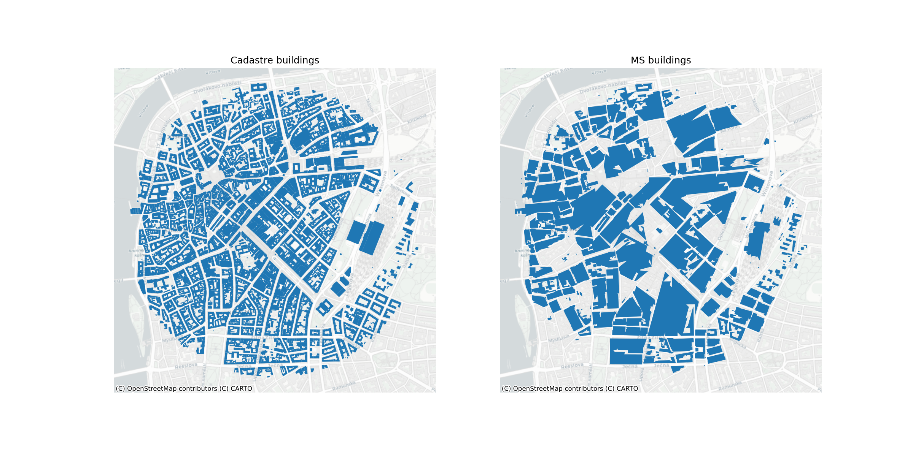

Reference Data Selection
Technical Note D3
Executive summary
This technical notes offers an overview of the data used within the EuroFab project and the reasoning behind its selection. The project requires data falling into two categories - morphological data and AI data.
The data in the morphological category consists of two layers - one, reflecting raw urban fabric in suboptimal quality, but available for large parts of the globe; and two, a layer capturing the target classification the models developed in the project should predict based on the suboptimal data input. Therefore, we rely on Microsoft Open Buildings project for building footprints and Overture Maps Transportation layer for street networks, capturing the raw morphological elements, and the upcoming morphotope-based hierarchical classification of urban fabric developed at the Charles University, reflecting the target for the prediction (Fleischmann and Samardzhiev Forthcoming). Both of these layers cover Central Europe - Poland, Austria, Czechia, Slovakia and Germany.
The second category of data consists of openly available satellite imagery based on the GHS-composite-S2 R2020A dataset (Corbane et al. 2020) providing a cloud-free mosaic of visible RGB bands coming from the Sentinel 2 mission at 10m per pixel resolution. The satellite imagery will be used to predict another classification of urban fabric, paving the way for development of time-based classification in the future. The classification that is used as an input is using the open data product of British spatial signatures, covering the extent of Great Britain (Fleischmann and Arribas-Bel 2022).
We use different input classifications for the morphological and the AI components of the project to not block the development of the AI model. This is due to the limited duration of the project, and since the the morphotope-based classification became available only in Q4 2024. The expectation is that the two classifications are conceptually close enough and the model architecture developed for signatures can be later used to build equally or more precise predictive model for the morphotope-based classification.
Morphological data
Ground truth classification
The main aim of this project is to create a predictive model that is capable of classifying urban fabric. To achieve this we need to use existing urban fabric classifications as ground truth data for model training. We have chosen the (Fleischmann and Samardzhiev Forthcoming) classification to act as the ground truth, since it a classification that is detailed (using the resolution of individual buildings), consistent and scalable, while being fully data-driven, meaning there is no set of conceptual classes involved, providing closer representation of the nature of urban fabric in various diverse places around Central Europe. At the same time, it is based on the highest quality data available - building cadastre data from official sources. Since Fleischmann and Samardzhiev (Forthcoming) is upcoming work we describe its methodology and results in detail in this and in the Technical Note D2: Algorithm Design and Theoretical Basis Description.
The new classification (Fleischmann and Samardzhiev Forthcoming) extends the work of (Fleischmann et al. 2022), which has been used in numerous subsequent studies and official planning documents (Calafiore et al. 2023; Arribas-Bel and Fleischmann 2022; K. Samardzhiev et al. 2022) . It uses a combination of buildings and streets to generate Enclosed Tessellation Cells (ETCs), which are spatial units that are centred around buildings, and encapsulate the surrounding space that is nearest to them, rather than other buildings. ETCs boundaries are also limited by streets or a preset buffer distance from the centre of the building, which acts as the centre of the ETC. It is from this combination of buildings, streets and space, that the ETC can combine morphological characteristics of both streets, street intersections, buildings and blocks. The next step in Fleischmann and Samardzhiev (Forthcoming) is to measure different characteristics of the ETCs. A literature review carried out by Fleischmann, Romice, and Porta (2021) outlines a large number of possible variable that can be measured, of which Fleischmann et al. (2022) empirically suggests that there are around 74 unique ones that take into account the two dimensional nature of the data. (Fleischmann et al. 2022) use the full array of characters since they don’t know a priori which will be the important variables. (Fleischmann and Samardzhiev Forthcoming) uses a subset of 54 and the detailed list of characters is presented in the Algorithm design technical note, since both our method and (Fleischmann and Samardzhiev Forthcoming) share the same characters. Similar to (Fleischmann et al. 2022) the new clustering approach is split into two parts - defining fixed clusters and generating their taxonomy of based on their similarity, where the new approach uses regionalisation to capture the concept of a morphotope.
Conzen (1988), as reported in Larkham and Jones (1991), defines morphotopes as the ‘smallest urban localities obtaining distinctive character among their neighbours from their particular combination of characteristics of plan type, building type and land use’.The classification follows this defining and operationalises a morphotope as a set of spatially contiguous ETCs with a minimum of 75 elements, where the internal distance calculated based on the morphological characters is on average lower within the set, than to other sets. The morphotopes for every region are calculated in isolation and in parallel. The definition of the subregions guarantees that all elements that are spatially contiguous, or have any spatial leakage effects, i.e. adjacency or being part of the same street segment, are processed together in the same region. Once the morphotopes are delineated, the mean of the characters of their constituent ETCs are assigned them. Therefore, every morphotope has the same dimensionality as the ETCs that form it.
The second step is the creation of a taxonomy of morphotopes for the whole of Central Europe. This is achieved through the application of non-spatially restrained ward clustering at two stages - one regional and one global. The resulting hierarchy can be cut at different levels depending on the application. For example at low values, there is some regional information still preserved in the hierarchy - morphotopes from one city are merged to identical morphotopes from the same city. Whereas at higher levels, different types of urban fabric, emerge across countries.
The figure below shows a specific cutoff value, which separates different types of houses; from heterogenous historical urbanised areas; from recent modern urban developments such as apartment blocks and commercial areas; from large industrial areas.

More detailed information about the methodology is available in the Technical Note D2, as we aim to follow it as closely as possible in this project.
Limitations
Even though all the data comes from official cadastre sources there is regional heterogeneity.
One limitation of the classification’s underlying data is that building unit boundaries are not recorded in a consistent manner. For example, a modernist housing block is sometimes represented as a single polygon, other times as multiple adjacent polygons, each of which representing a physical entrance to the unified building. This discrepancy adverse affects the calculation of some morphotopes related to adjacency, shape and size. In many cases this means that modernist housing estates are split based on these polygon boundaries delineations. In other cases, some modernist housing estates are treated by the algorithm as industrial areas, due to the sheer size of its units and the layout of the street network. To account for this, two preprocessing steps are carried out in the classification. First, auxiliary data is used in Czechia to combine all adjacent units into single, unified polygons for consistency. Second, an extra variable - indicating elongation and a low area to perimeter ratio is added to the hierarchy calculations. The motivation behind this variable is that non-industrial buildings are typically thin and elongated, laid out in complex patterns to maximise sunlight exposure. No extra information was used to calculate this indicator, only the morphometric characteristics already available.
Another limitation is that the definition of buildings is different in different regions in Central Europe. Hamburg and Berlin include train and tram lines, parking lots and parts of motorways as buildings in their official cadastre data. To limit the adverse effects of these additions, we drop any buildings that intersect overture streets in these two regions.
Building footprints
Building footprints are one of the two core elements needed to generate morphometric classifications. Measurements of aspects of buildings provide the bulk of the information about the morphological character of a place. Many characters in the literature (Fleischmann, Romice, and Porta 2021), for example the ratio of perimeter shared with other connected buildings, require very high quality building footprints to accurately reflect the reality of the underlying topology. There are numerous available source of building footprints - official cadastre polygons; volunteer made OpenStreetMap data; Satellite-derived building footprints; or combinations of all of these such as Overture Maps or EUBUCCO. Each of these data sources come with their own drawbacks and advantages.
Available sources
The highest quality available data is from official cadastre building footprints. These provide the ground truth information for official planning and administrative applications in many countries. However, the data is not always readily available and even when it is, it may require a high degree of preprocessing. For example, there is no readily available cadastre data to download for EU countries such as Hungary and Bulgaria. Even though data for Germany is available, it is split across 16 states, each of which has its own interface and data format. Furthermore, the data is not always comparable between countries reflective of the physical reality - for example in Czechia the official cadastre reflects ownership situation in some modernist apartment blocks, rather than the physical structure of the buildings, leading to the morphological inconsistency within the same data source, not mentioning the issue across the sources.
Another common source is OpenStreetMap (OSM) map, which is free and open geographical database generated by volunteers. In many cases the cadastre data is processed and put into OpenStreetMap, alongside volunteer contributions where official data is missing. The issues with OSM data are similar to cadastre data where the cadastre data is used as the basis and is even harder to process since the schema used for buildings is more generic. Furthermore, the quality is unequal - for example the data in Germany is very high quality, but in not in other countries like Italy or Bulgaria. The similar heterogeneity can be observed not only between countries but often within individual cities, with some districts being of a very high quality, others being more generalised and other completely missing.
Another available data source is satellite-derived building footprints, which are becoming more widely adopted due to advances in satellite technology and computer vision algorithms. They have successfully been used in applications for city boundary delineation, desegregating population and others (K. P. Samardzhiev 2023). There are multiple sources of global building footprints available - Google building footprints, Microsoft building footprints, ESRI community data, Overture maps, as well as other proprietary data. The advantage of satellite-derived building footprints data is that it is all derived in a consistent manner and covers large geographical areas. However, the quality is generally worse than other sources and the geometric topology capturing adjacent buildings is typically broken.
The newest available data, such as EUBUCCO (Milojevic-Dupont et al. 2023) or Overture Maps combine different types of other sources. Overture is based off of OSM, but adds a hierarchical structure of sources on top of it. The buildings from OSM are considered the ground truth and buildings from additional sources such as satellite data are added where there is no OSM data. This means that in general it has the highest number of available buildings. However, it comes with the same issues that OpenStreetMap data has, and it even further exasperates the data heterogeneity issues - in different places different data sources with different characteristics are merged. Thus, working with the data requires more preprocessing than other resources.
Similarly, the EUBUCCO is another data source that combines multiple datasets - official cadastre data and OpenStreetMap. Therefore it has the same advantages and disadvantages of its core sources. Furthermore, it has missing data issues that stem from the specific fusion approach of these sources. For example, there is a whole missing neighbourhood in central Prague and, in general, it has less buildings than the official cadastre data for the Central European study area.
Microsoft building footprints
In this project, we use the Microsoft building footprints since they fully cover our study area - Poland, Czechia, Germany, Austria, Slovakia (i.e Central Europe). The dataset also has good worldwide coverage - they contain around 1.5 billion building polygons - and the footprints are derived in a consistent way, which ensures scalability of our method to different countries. It should be noted that our approach can also work for other consistently derived building polygons, Google Footprints for example, so long as all the data is generated from the same source.
However, the data does not come without issues. For example, in dense urban centres entire blocks can be delineated as individual buildings. Given that morphology calculations rely on precise local topological relations between neighbours, such as two buildings touching, this problem renders a whole number of possible measurements described in (Fleischmann, Romice, and Porta 2021) meaningless. Furthermore, this issue affects even simpler calculations such as counting the number of buildings within a radius or topological neighbourhood. Other issues are that computer vision techniques sometimes miss entire buildings or misidentify building boundaries. Therefore, any approach that uses satellite-derived building footprints should be able to account for these three and potentially other problems.

Street data
Street network data is the other major data source used in numerical morphometric analysis. It is used to identify spatial relationships, delineate boundaries for other elements and calculate morphological features of the streets themselves, such as length or width. There are numerous sources for street network data, however the major one is OpenStreetMap and its derivate - Overture Maps.
Overture transportation layer
The street network used in this study is a direct download from Overture maps, a processed subset of data from OpenStreetMap with some additions. OpenStreetMap has global coverage and high quality data, especially for vehicular roads, on actual physical layouts of the roads, as well as additional information on street type. We use Overture directly due to the fact that it is more accessible and easier to process, however the underlying geometry and information of the two data sources is identical.
The types of street segments used in the analysis are limited to the ones listed in Table 1.
| Types of streets |
|---|
| living_street |
| motorway |
| motorway_link |
| pedestrian |
| primary |
| primary_link |
| residential |
| secondary |
| secondary_link |
| tertiary |
| tertiary_link |
| trunk |
| trunk_link |
| unclassified |
Another type of segment that is filtered out are tunnels , since the analysis strictly focuses on two dimensions and therefore undergrounds structures adversely affect the calculation of boundaries and characters.
Limitations
There are two limitations, related to the alignment of the satellite-derived and cadastral building footprints - one temporal and one spatial. First, most cadastral data comes from a single year, whereas the satellite-derived building footprints come from images from multiple years. Second, the cadastral data has a larger spatial coverage and therefore there are areas with cadastral data, which as missing in the satellite-derived data. The second issue has a limited impact on the model training, since areas present in the cadastral data but not in satellite-derived polygons are ignored due to the spatial inner join. Nevertheless, both of these problems affect model evaluation and are promising areas of future research.
AI data
Satellite imagery
We use satellite images as input into the AI model to predict urban fabric. The satellite image data is sourced from the GHS-composite-S2 R2020A dataset (Corbane et al. 2020). This dataset is a global, cloud-free composite derived from Sentinel-2 L1C data, covering the period from January 2017 to December 2018. The composite images have a resolution of 10 meters per pixel and include three visible bands (red, green, and blue), which are well-suited for urban analysis.
Sentinel-2 data is particularly suitable for this application due to its consistent and openly available global coverage, which is ideal for projects requiring cross-regional comparisons. Its temporal flexibility, enabled by composites from multiple time points, allows for the analysis of urban patterns over time. With a resolution of 10 meters per pixel, Sentinel-2 provides the highest level of detail among openly available datasets, making it sufficient to distinguish urban features at the neighborhood scale. Additionally, its compatibility with many geospatial AI models pre-trained on Sentinel-2 data supports the use of existing methods and facilitates transfer learning.
Urban fabric classes
The urban fabric predictions from our AI model are based on labels from the Spatial Signatures Framework (Arribas-Bel and Fleischmann 2022; Fleischmann and Arribas-Bel 2022), which provides a typology of British urban environments characterized by both form (physical structure) and function (usage). This framework captures the complexity of urban areas, offering insights into how different spaces look and operate. While our primary focus is on urban fabric classification centered on form—an approach that may be simpler since form is visible in imagery—we currently use the Spatial Signatures Framework as a proxy due to its conceptual alignment with our goals for urban characterization. This decision is also influenced by the limited duration of the project and the fact that the morphotope-based classification only became available in Q4 2024. To ensure progress in developing the AI model, we use separate input classifications for the morphological and AI components of the project. The expectation is that the two classifications are conceptually similar, allowing the model architecture developed for Spatial Signatures to later support building an equally or more precise predictive model for the morphotope-based classification.